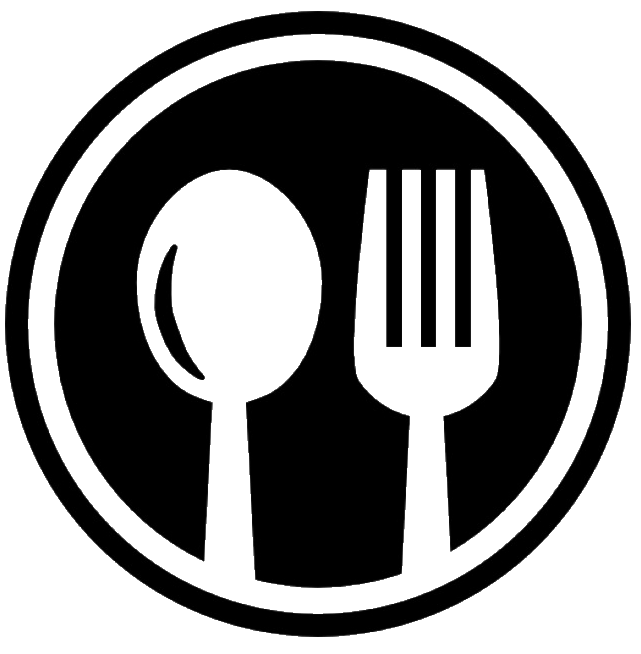

Continental food court
Asian
Tibetan Dishes
Tsampa (རྩམ་པ།)
Thenthuk (ཐུག་པ།)
Momos (མོག་མོག)
Dre-si (འབྲས་སིལ།)
Yak Stew (ཡག་ཤ།)
Phing Sha (ཕིང་ཤ།)
Sha Baklap (ཤ་བག་ལེབ།)
Shap-Ta (ཤ་སྲེག)
Ti-mok (ཀྲིང་མོག)
Baklap (བག་ལེབ)
Tibetan Tea (བོད་ཇ།)
Sku (སྐྱུ།)
Taiwanese Dishes
Beef Noodle Soup (牛肉麵)
Gua bao, or the Taiwanese Hamburger (刈包)
Zong Zi: Sticky Rice Dumpling (粽子)
Taiwanese Fried Chicken (鹹酥雞)
Braised Pork Rice (滷肉飯)
Oyster Vermicelli Noodles (蚵仔麵線)
Scallion Pancake (蔥油餅)
Century Egg (皮蛋)
Three-Cup Chicken (三杯雞)
Xiao Long Bao, or Soup Dumplings (小籠包)
Fan Tuan (飯糰)
Japenese Dishes
Rice porridge (お粥)
Sushi (寿司)
Noodles (men-rui, 麺類)
Bread (pan, パン)
Deep-fried dishes (agemono, 揚げ物)
Grilled and pan-fried dishes (yakimono, 焼き物)
Nabemono (one pot cooking, 鍋物)
Gyūdon: (牛丼, beef bowl)
Katsudon (カツ丼)
Oyakodon (親子丼)
Tekkadon (鉄火丼)
Mongolian Dishes
Malaysian Dishes
Vintamese Dishes
Korean Dishes
Singapoor Dishes
Bhutanese Dishes
Indian Dishes
Pakistani Dishes
Russina Dishes
Dubian Dishes
Turkish Dishes
Afganistan Dishes
African
Nigerian Dishes
Jollof Rice
Iyan (Pounded Yam)
Àmàlà (Yam Flour/ Cassava Flour/ Plantain Flour)
Ogbono Soup (African Mango Seed Soup)
Puff-Puff (Fried Sweet Dough Ball)
Àkàrà (Fried Bean Cake)
Pepper Soup
Suya (Spicy Grilled Kebab)
Asaro (Yam Porridge)
Egusi (Melon Seed Soup)
Ẹ̀bà (Cassava Meal)
Ethiopian Dishes
Egyptian Dishes
Congo Dishes
Tanzanian Dishes
South African Dishes
Kenyan Dishes
Ugandan Dishes
Algerian Dishes
Sudann Dishes
Moroccian Dishes
Cameroon Dishes
Ghanan Dishes
Ghanan Dishes
Ghanan Dishes
Ghanan Dishes
Ghanan Dishes
South American
Europian
Australian
Nort American
African